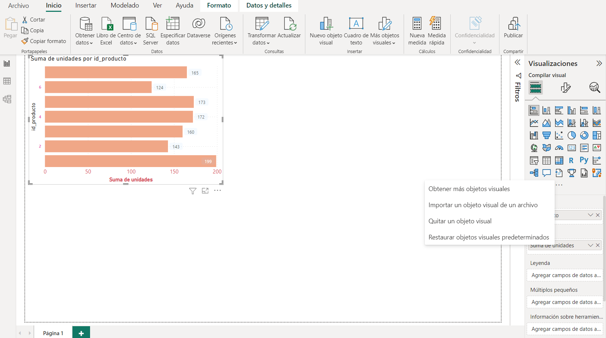
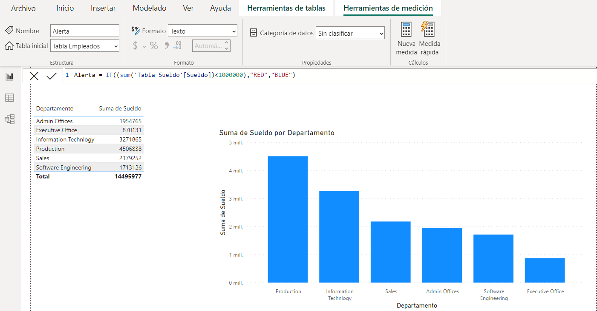

FASE 4: DATA VISUALIZATION¶
Pasos para crear un informe:
- Utilizar Power BI Desktop.
- Seleccionar origen de datos.
- Preparar y modelar datos (transformar datos, crear columnas, crear medidas,...).
- Crear las relaciones (o revisar las que se han creado).
- Utilizar Visualizaciones (tablas, filtros, gráficos, etc).
- Publicar el pbix en PowerBi Service.
Visualizaciones¶
Cuando instalamos Power BI, por defecto nos aparecen unos elementos de visualización básicos.
Podemos descargar o importar objetos visuales desde Microsoft AppSource siempre que tengamos una cuenta corporativa. Encontramos algunos objetos que son gratuitos y otros de pago.
Si no tenemos una cuenta corporativa podemos crear una gratuita desde office 365 enterprise
Si queremos utilizar algún tipo de visualización que no aparece por defecto, podemos importarlo desde la opción ...

Gráficos de comparación¶
Gráficos de tiempo¶
Gráficos parte VS todo¶
Gráficos de geolocalización¶
Gráficos de clasificación¶
Gráficos de correlación¶
Gráficos de Flujo¶
Gráficos avanzados¶
En la siguiente tabla tenemos un campo que es comprador que nos dice si es 0 es que no esa persona tiene tendencia a ser comprador y si es 1 es que no tiene tendencia a ser comprador.
Filtros¶
Existen 3 jerarquias de filtros. Para que el filtro no le afecta a un tipo de gráfico en concreto tenemos que indicarlo.
1. El filtro afecta al gráfico que tenemos seleccionado en ese momento.
2. El filtro es para toda la página completa incluyendo todos los gráficos que tenemos en ella.
3. El filtro afecta a todas las páginas que tenemos en el pbix.
Botones¶
Podemos crear botones para que cuando pulsemos el botón, se desencadene una acción.
Se pueden utilizar para crear botones tanto formas como imágenes.
Vamos a crear un botón para que nos aparezcan los gráficos de barras y otro botón para los gráficos de líneas.
Creamos los botones blancos y visualizamos los menús de marcadores y selección. En el panel Formato modificamos las características del botón como color de fondo, borde, títulos, etc.
Le damos el formato que queramos al botón y desactivamos la visualización de los dos gráficos (pulsando el ojo) y agregamos el Marcador1.
Seguimos los mismos pasos pero con los gráficos de líneas y agregamos el Marcador2.
Ahora activamos para cada botón la acción del marcador correspondiente:
Pulsando CTRL y el botón podemos visualizar los dos tipos de gráficos:
Alertas¶
Vamos a crear una alerta haciendo que cambie de color si no cumple ciertos parámetros.
Ejemplo
Creamos una medida que vamos a llamar Alerta que nos va a avisar si el total de los sueldos de un departamento es inferior a 1.000.000.

Seleccionamos el gráfico donde queremos poner la alerta y pulsamos el botón fx:
Elegimos las siguientes opciones:
El resultado final sería: